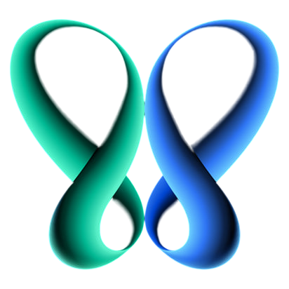
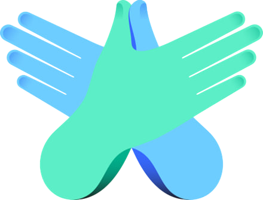
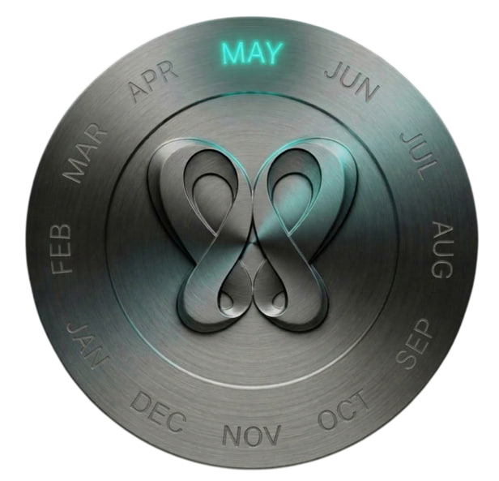
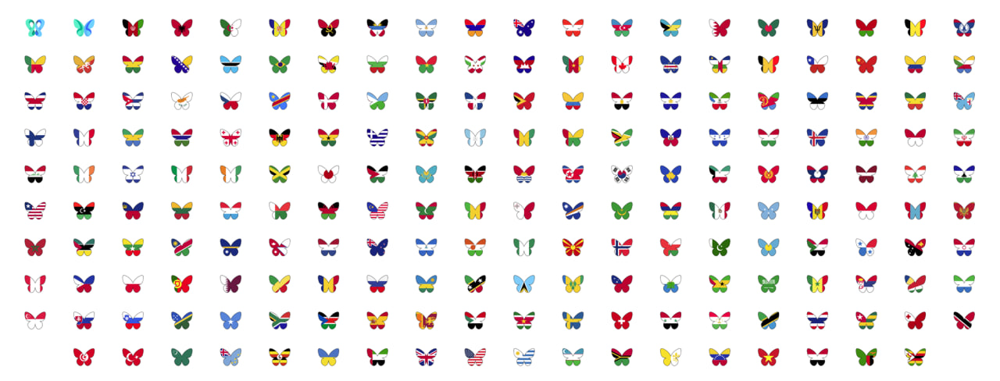
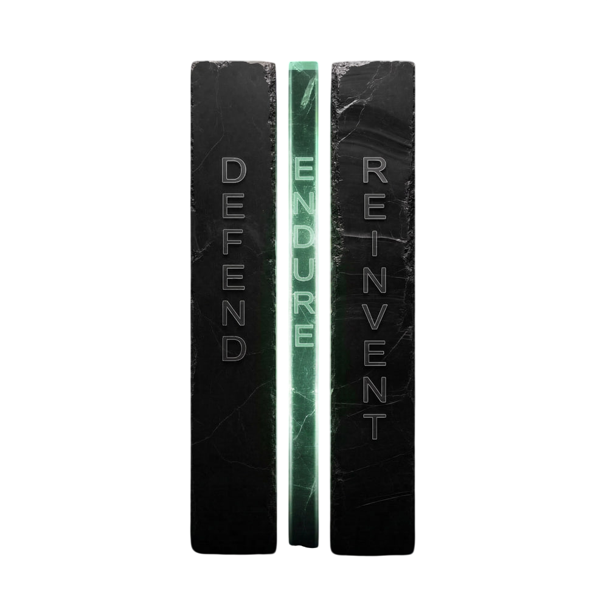

Emotional Infrastructure for Humanity. Culture creates the permission. Infrastructure delivers the support.
We have built systems for energy, finance, security, and climate. We have not yet built a system for emotional wellbeing. Butterfly OS is the beginning of that system.
Together, they form Emotional Infrastructure for Humanity.
The symbol. The sign. The Five Seasons. Butterfly Month every May. Culture makes care visible.
The cultural layer is the foundation we are building now. The next stage will be operational emotional sustainability, resilience, and regeneration. The infrastructure to come, after culture has done its work first.
Transformation made visible.
Care at the center.
Every mind belongs.

From the heart, it helps pain soften, love expand, and belonging become visible. The first universal emotional gesture since the peace sign.
Not how it should feel. Not what you'd post. Just really.
The Five Seasons Egg, Caterpillar, Cocoon, Metamorphosis, Butterfly. A shared language for the season you're in.

One symbol. One language. One month.
Every May, the world shares one visible moment for emotional wellbeing.
The symbol appears. The conversation begins. Streets, schools, screens, stadiums.
Schools, cities, companies, and communities move together. Reporting periods open.
Every May. Permanent. The world shows up for itself, for each other, for what is real.
One humanity. Many flags. One butterfly. A shared symbol across nations, cultures, and communities.

Deploy Season Pulse and the Trusted Circle Prompts. Activate together for Butterfly Month in May. Receive your first dashboard report at the end of Q3.
Start a conversation See the full systemWe are building infrastructure for the planet. Now we are building it for humanity. Three pillars. One operating logic coming in the next stage of our work.

Build psychological safety and belonging. Create healthy defaults in schools, workplaces, and platforms. Reduce barriers before crisis occurs.
Help people stay functional through disruption. Reduce shame around difficulty. Provide structured pathways during loss, burnout, and change.
Redesign systems that cause harm. Rebuild community density. Align AI and technology with human dignity.
Replace silence with a shared symbol, language, and ritual that makes care visible.
Five seasons give every person a way to name where they are without diagnosis.
Schools, governments, and companies adopt the Accord, the Index, and the Bonds.
Butterfly Bonds create the first financing instrument for emotional wellbeing at scale.
A new category attracts founders, researchers, and technologists to the human layer.
Emotional Infrastructure becomes real for humanity.
Foundations, schools, employers, communities, press write to us.
hello@butterfly.oneFree, confidential, available 24/7. Reach out even if it doesn't feel urgent.
These are external services we direct you to with care. Butterfly OS is not itself a crisis service.